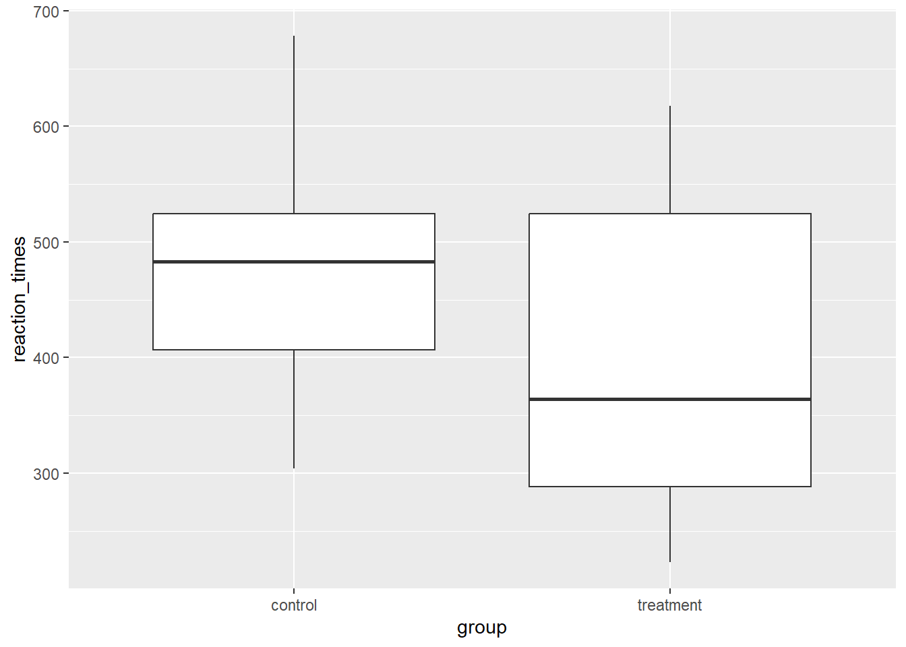
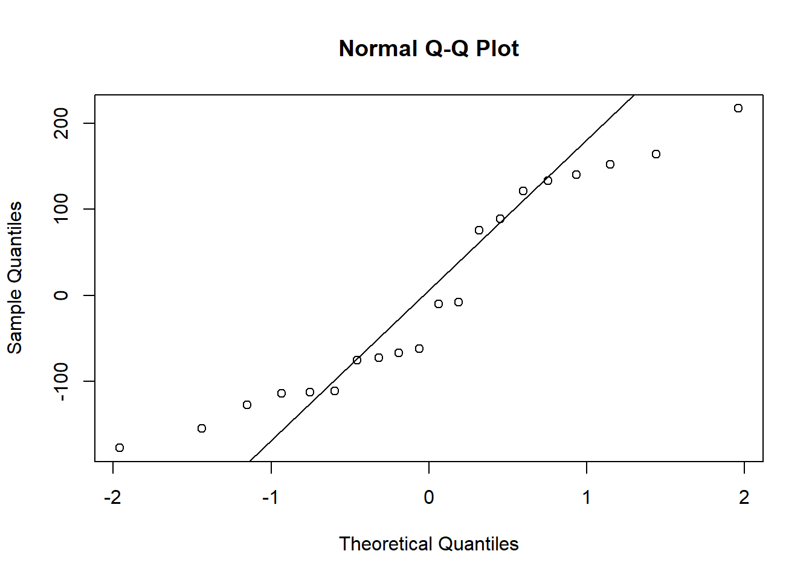
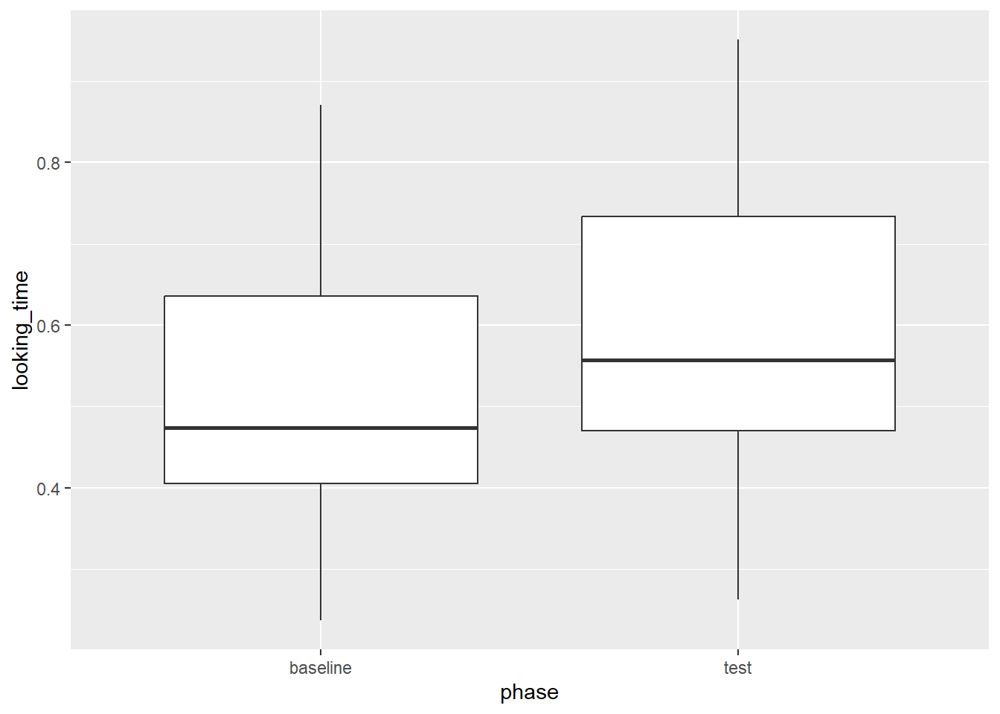
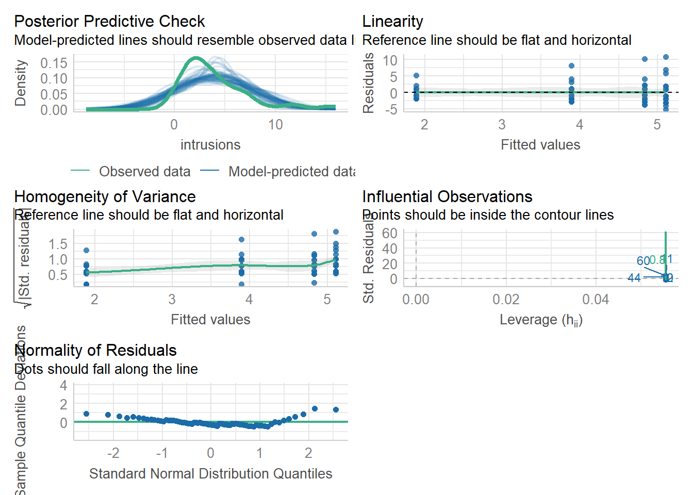
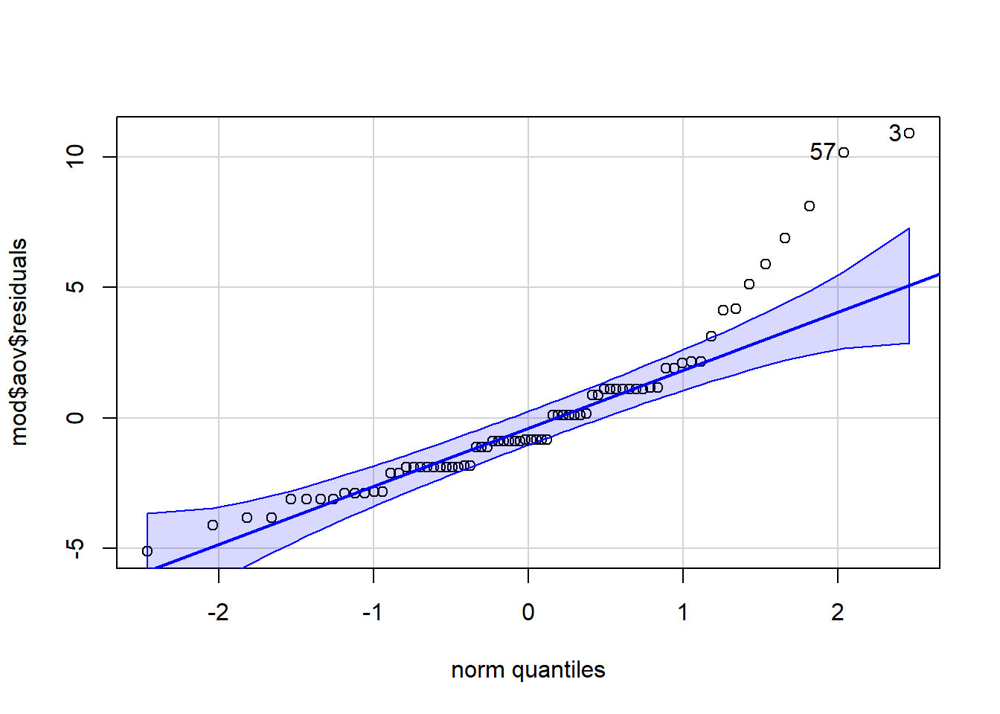

code.sourceCode {
font-size: 1.4em;
}
div.cell-output-stdout {
font-size: 1.4em;
}09 Statistical Analyses in R
Julius-Maximilians-University Würzburg
Course: “Biostatistics”
Translational Neuroscience
Course: “Biostatistics”
Translational Neuroscience
Kinds of Statistical Analyses
Last session, we have heard about Chi² tests, t-tests, correlations, and ANOVA. Today we will apply them in R.
library(car)Lade nötiges Paket: carData
Attache Paket: 'car'Das folgende Objekt ist maskiert 'package:dplyr':
recodeDas folgende Objekt ist maskiert 'package:purrr':
somelibrary(effectsize)
library(tidyverse)which analysis do you use when you have two categorical etc. variables?
Set Up
Open RStudio and load your Biostats R project. Create a new script called
DataAnalysis1.R.Install and load new packages you’ll need:
car,effectsize, andapa.
Activity 1
Which test would you choose if you wanted to test whether a variable is differently distributed between groups?
Let’s say we have tested 20 mice and want to know whether they pressed the blue, green, or red lever more often than by chance. This is how often the mice pressed each lever: Blue = 5, Green = 4, Red = 11
. . .
We would run a (one-sample) Chi²-test!
Remember that in a Chi²-test, we would compare observed to expected counts:
\[ \chi^2 = \sum\frac{(Observed - Expected)^2}{Expected} \]
One Sample Chi²-Test
library(tidyverse)
# Input data into R
lever_presses <- tibble(levers=c(rep("blue", 5), rep("green", 4), rep("red", 11))) %>% #data in usual format
count(levers) #convert to a frequency table
# run Chi² test
chi2_lever <- chisq.test(lever_presses %>% pivot_wider(names_from="levers", values_from="n")) #wide format needed
#chi2_lever <- chisq.test(tibble(blue=5, green=4, red=11)) #enter data directly as summary table
chi2_lever %>% apa::chisq_apa() #output resultschi^2(2) = 4.30, p = .116# add expected count and residuals to data
lever_presses %>% mutate(expected = chi2_lever$expected,
residuals = chi2_lever$residuals)# A tibble: 3 × 4
levers n expected residuals
<chr> <int> <dbl> <dbl>
1 blue 5 6.67 -0.645
2 green 4 6.67 -1.03
3 red 11 6.67 1.68 Is sample size not important for significance here? \[\chi^2 = \sum\frac{(Observed - Expected)^2}{Expected}\] More observations => easier to see greater absolute difference between observed and expected values => gets squared and therefore “outcompetes” denominator (what about expected reductions in sampling error?)
Chi²-Test 2
We can also run a Chi²-test for two variables, such as if we want to know whether the lever presses differ per group.
Let’s say we have a treatment and a control group and we record the different lever presses:
| Group | Blue | Green | Red | Totals |
|---|---|---|---|---|
| Treatment | 3 | 12 | 5 | 20 |
| Control | 5 | 4 | 11 | 20 |
| Totals | 8 | 16 | 16 | 40 |
Remember: We use the assumption of independence to calculate the expected values.
. . .
lever_presses2 = tibble(group="treatment", blue=3, green=12, red=5) %>%
bind_rows(tibble(group="control", blue=5, green=4, red=11)) #clearest way to manually input data
#for long data, you create the frequency table identically to previous slide but with: count(group, levers)
chisq.test(lever_presses2 %>% column_to_rownames("group")) %>% apa::chisq_apa()Warning in chisq.test(lever_presses2 %>% column_to_rownames("group")):
Chi-Quadrat-Approximation kann inkorrekt seinchi^2(2) = 6.75, p = .034Assumptions of Chi²-Tests
Random sample
Categorical variables, i.e., counts within (combinations of) groups
Expected cell count: >5 counts per cell
Independence: Each observation is independent of the others, e.g. there are no repeated measurements/paired data (within-subjects data are correlated!)
. . .
In the case of the last analysis, we got a warning because the expected cell sizes were too small. In this case, it is better to use Fisher’s exact test:
fisher.test(lever_presses2 %>% column_to_rownames("group"))
Fisher's Exact Test for Count Data
data: lever_presses2 %>% column_to_rownames("group")
p-value = 0.04168
alternative hypothesis: two.sidedActivity 2
Now imagine you want to compare reaction times of the lever presses of the two groups of mice. You expect that those in the treatment group respond faster than those in the control group. Which statistical test would you use?
. . .
Hint: We now have two independent groups and a continuous dependent variable (reaction times).
. . .
An (independent samples) t-test!
. . .
t-test setup
To run a t-Test, let’s first simulate data. What happens here?
set.seed(31415)
sim_data_t <- tibble(
group = rep(c("treatment", "control"), each=20),
reaction_times = c(rnorm(20, 400, 100), rnorm(20, 450, 100))). . .
# visualize
ggplot(sim_data_t, aes(x=group, y=reaction_times)) +
geom_boxplot()
t-Test
We can use the formula notation to run the t-test. This notation usually looks like this:
dependent variable ~ independent variable.
Replace the NULLs:
t.test(NULL ~ NULL,
data = NULL,
alternative = NULL,
paired = NULL) . . .
t.test(reaction_times ~ group,
data = sim_data_t,
alternative = "greater", #depends on ALPHABETICAL order of groups in data!
#paired = FALSE # this is the default, so no need to specify it
)
Welch Two Sample t-test
data: reaction_times by group
t = 1.9841, df = 34.42, p-value = 0.02763
alternative hypothesis: true difference in means between group control and group treatment is greater than 0
95 percent confidence interval:
10.02639 Inf
sample estimates:
mean in group control mean in group treatment
468.0592 400.3289 . . .
As you can see in the output, R automatically chose to run Welch’s t-test, which does not assume variance homogeneity in contrast to Student’s t-test. For the latter, you can add the function parameter var.equal = TRUE
When changing the name “treatment” to “a”, the results change:
t.test(reaction_times ~ group,
data = sim_data_t %>% mutate(group = ifelse(group=="treatment", "a", group)),
alternative = "greater", #depends on order of groups in data! 1st group > 2nd group
var.equal = TRUE) %>% apa::t_apa()t(38) = -1.98, p = .973, d = -0.63t-Test: alternatives
You can also supply two vectors of numerical values for the groups:
t.test(x = sim_data_t %>% filter(group=="treatment") %>% pull(reaction_times),
y = sim_data_t %>% filter(group=="control") %>% pull(reaction_times),
alternative = "less") #more intuitive now because you can filter for treatment first
Welch Two Sample t-test
data: sim_data_t %>% filter(group == "treatment") %>% pull(reaction_times) and sim_data_t %>% filter(group == "control") %>% pull(reaction_times)
t = -1.9841, df = 34.42, p-value = 0.02763
alternative hypothesis: true difference in means is less than 0
95 percent confidence interval:
-Inf -10.02639
sample estimates:
mean of x mean of y
400.3289 468.0592 . . .
More useful output with apa package (only for Student’s t-tests):
t.test(x = sim_data_t %>% filter(group=="treatment") %>% pull(reaction_times),
y = sim_data_t %>% filter(group=="control") %>% pull(reaction_times),
alternative = "less",
var.equal = T) %>%
apa::t_apa(es_ci=T) #optional: confidence interval around effect sizet(38) = -1.98, p = .027, d = -0.63 [-1.26; 0.01]. . .
For paired t-tests, you can also work with the wide format of data (advantage: missing values become explicit):
sim_data_t_wide = sim_data_t %>% mutate(subject=rep.int(1:(n()/2), 2)) %>%
pivot_wider(names_from="group", values_from="reaction_times")
t.test(x = sim_data_t_wide %>% pull(treatment),
y = sim_data_t_wide %>% pull(control),
alternative = "less",
paired = T) %>%
apa::t_apa(es_ci=T) #optional: confidence interval around effect sizet(19) = -1.98, p = .031, d = -0.44 [-0.90; 0.02]Assumptions of t-Tests
Before we run a t-test, we also want to check the assumptions for violations:
The dependent variable is continuous (otherwise: chi²-test)
The data are independent (otherwise: paired sample t-test)
The variance between the groups is homogeneous (only for Student’s t-test, R uses Welch’s test by default)
The residuals are normally distributed for each group (otherwise:
wilcox.test)
. . .
Oftentimes, the last assumption is misquoted as: “The dependent variable needs to be normally distributed”.
In fact, only its sampling distribution needs to be (blue vs. grey distribution in the lecture on sampling [direct link]), which will always be the case for big enough samples due to the central limit theorem.
Assumptions of t-Tests 2
Test for normality of residuals (for both groups): If points fall along the line nicely, assumption is met.
treatment <- sim_data_t %>%
filter(group == "treatment") %>%
mutate(group_resid =
reaction_times - mean(reaction_times)) %>%
pull(group_resid)
#base R QQ plot
qqnorm(treatment)
qqline(treatment)
control <- sim_data_t %>%
filter(group == "control") %>%
mutate(group_resid = reaction_times - mean(reaction_times)) %>%
pull(group_resid)
#car's version highlighting (and returning) problematic values
car::qqPlot(control)
[1] 18 4Assumptions of t-Tests 3
Alternatively, we can also run a Shapiro-Wilk test to test for deviations from normality:
shapiro.test(x = treatment)
Shapiro-Wilk normality test
data: treatment
W = 0.91403, p-value = 0.0761shapiro.test(x = control)
Shapiro-Wilk normality test
data: control
W = 0.96812, p-value = 0.7147If the test is non-significant, then we can conclude that normality of residuals is not violated.
- Transform your data to try and normalise the distribution. Not usually recommended these days but some still use it.
- Use a non-parametric test. The non-parametric equivalent of the independent t-test is the Mann-Whitney and the equivalent of the paired-samples t-test is the Wilcoxon signed-ranks test. Though more modern permutation tests are better.
- Do nothing. Delacre, Lakens & Leys, 2017 argue that with a large enough sample (>30), the Welch test is robust to deviations from assumptions. With very large samples normality is even less of an issue, so design studies with large samples.
Optional Activity: Paired Samples t-Test
Sometimes you have dependent data: These data are somehow correlated, e.g. they belong to the same subject (that you measured repeatedly across a within-subject manipulation).
. . .
In this case, you would use a paired-samples t-test.
. . .
Let’s run such a t-test with real data. We’ll use the Mehr Song and Spelke 2016 Experiment 1.csv file (note that this is not a good file name!).
In this dataset, the authors examined whether infants exposed to certain songs would recognize strangers singing these lullabies as part of their social group. Parents sang certain lullabies to their infants for 1-2 weeks. During the experiment, the infants looked at videos of two strangers: First the strangers were just smiling (baseline phase), then they would sing either the familiar or an unfamiliar lullaby. Finally, the infants again saw the videos of the strangers smiling (test phase). Eye-tracking (duration looked at each stranger) was measured.
. . .
Load the file into your Environment. Run the code and explain what happens:
gaze <- read_csv("Mehr Song and Spelke 2016 Experiment 1.csv") %>%
filter(exp1 == 1) %>%
rename(baseline = Baseline_Proportion_Gaze_to_Singer,
test = Test_Proportion_Gaze_to_Singer) %>%
select(id, baseline, test)Rows: 96 Columns: 153
── Column specification ────────────────────────────────────────────────────────
Delimiter: ","
chr (7): study_code, dob, dot1, dot2, dot3, stim, module
dbl (146): id, exp1, exp2, exp3, exp4, exp5, female, dad, train, Baseline_Pr...
ℹ Use `spec()` to retrieve the full column specification for this data.
ℹ Specify the column types or set `show_col_types = FALSE` to quiet this message.Assumptions of the Paired-Samples t-Test
The data are continuous.
All participants should appear in both conditions/groups.
The residuals are normally distributed.
. . .
A paired-samples t-test actually tests whether the difference between two measurements is significantly different from 0 (= no difference/effect).
In our example data, this means that the test values are subtracted from the baseline values, and this difference is used as data.
To test the assumption that residuals are normally distributed, we thus calculate the residuals as follow:
gaze_residual <- gaze %>%
mutate(diff = baseline - test) %>%
mutate(group_resid = diff - mean(diff))
qqPlot(gaze_residual$group_resid)
[1] 22 29shapiro.test(gaze_residual$group_resid)
Shapiro-Wilk normality test
data: gaze_residual$group_resid
W = 0.97818, p-value = 0.7451Descriptives & Visualization
For the visualization, we need the data in long format (this is identical for between-subject groups):
gaze_tidy <- gaze %>%
pivot_longer(names_to = "phase",
values_to = "looking_time",
cols = c(baseline, test))
# boxplot
gaze_tidy %>%
ggplot(aes(x=phase, y=looking_time)) +
geom_boxplot()
We can also calculate the means and SDs per phase:
gaze_tidy %>%
summarise(mean_looking = mean(looking_time),
sd_looking = sd(looking_time),
n = n(),
.by = phase)# A tibble: 2 × 4
phase mean_looking sd_looking n
<chr> <dbl> <dbl> <int>
1 baseline 0.521 0.177 32
2 test 0.593 0.179 32Paired Samples t-Test in R
Any ideas how you would specify the paired samples t-test in R?
. . .
with(gaze, t.test(NULL, NULL,
paired = NULL,
alternative = NULL)). . .
with(gaze, t.test(baseline, test,
paired = TRUE,
alternative = "two.sided"))
Paired t-test
data: baseline and test
t = -2.4164, df = 31, p-value = 0.02175
alternative hypothesis: true mean difference is not equal to 0
95 percent confidence interval:
-0.13349698 -0.01129217
sample estimates:
mean difference
-0.07239458 Effect Size for the t-Test
You can (and should!) of course calculate and report effect sizes for your test statistics to get an impression of how practically relevant the effect is.
For the t-tests, you would calculate Cohen’s d (using the function from the effectsize package):
with(gaze, effectsize::cohens_d(baseline, test, paired=T))For paired samples, 'repeated_measures_d()' provides more options.Cohen's d | 95% CI
--------------------------
-0.43 | [-0.79, -0.06]. . .
Or just use the apa package and you get everything in one go:
with(gaze, #the with function allows to call columns as if they were variables (but pipe function doesn't work with it)
t.test(baseline, test, paired = TRUE)) %>%
apa::t_apa(es_ci=T)t(31) = -2.42, p = .022, d = -0.43 [-0.79; -0.06]Summary: Optional Activity
Most things are similar between independent and dependent sample t-tests
Make sure to include
paired=Tfor repeated measures to get correct resultsRecommendation: Use
apa::t_apa()withes.ci=Tto get (most of) the information you needIt is often a good idea to also report means and standard deviations per group (
summarisewith.byargument)Plotting: Unfortunately, (between subjects) confidence intervals are not diagnostic for the significance of dependent samples. Instead, we need the confidence interval around the paired differences (i.e., the within subject changes). Since this is not easy to do and there is little consensus yet, I will just raise awareness here.
Correlation: Preparation
If we have two continuous variables, we can look at their relationship using correlation. In the data you just used, we have two continuous variables: the repeated measures of gaze.
If you skipped the previous activity, here is what you need:
Download
Mehr Song and Spelke 2016 Experiment 1.csv(download button near the top right) into your project folder andrun this code:
gaze <- read_csv("Mehr Song and Spelke 2016 Experiment 1.csv") %>%
filter(exp1 == 1) %>%
rename(baseline = Baseline_Proportion_Gaze_to_Singer,
test = Test_Proportion_Gaze_to_Singer) %>%
select(id, baseline, test)Correlation Test
With these data, we might be interested in whether there is a relationship between the two measures of gaze, i.e., whether those children who looked at the stranger more at baseline would also be the ones who looked at the stranger more often at the follow-up test (here: indicating stability of preferences).
. . .
Similar to the paired t-Test, the continuous variables are also “paired” within subjects. Thus, we can a similar syntax that is easier for a wide format of data (gaze instead of gaze_tidy):
cor.test(x = gaze %>% pull(baseline),
y = gaze %>% pull(test),
method = "pearson",
alternative = "two.sided")
Pearson's product-moment correlation
data: gaze %>% pull(baseline) and gaze %>% pull(test)
t = 3.5686, df = 30, p-value = 0.00123
alternative hypothesis: true correlation is not equal to 0
95 percent confidence interval:
0.2435655 0.7515352
sample estimates:
cor
0.5458966 Note: We don’t have to indicate paired=T because correlations only work for paired values.
Correlations: Write Up
Once again, the apa package offers help to summarize the results:
cor.test(x = gaze %>% pull(baseline),
y = gaze %>% pull(test),
method = "pearson",
alternative = "two.sided") %>%
apa::cor_apa(r_ci=T)r(30) = .55 [.24; .75], p = .001. . .
You can even use report() to get an automatic suggestion of how to report the results (works with a lot of different models!).
library(report)
with(gaze, cor.test(x = baseline,
y = test,
method = "pearson",
alternative = "two.sided")) %>%
report()Effect sizes were labelled following Funder's (2019) recommendations.
The Pearson's product-moment correlation between baseline and test is positive,
statistically significant, and very large (r = 0.55, 95% CI [0.24, 0.75], t(30)
= 3.57, p = 0.001)We mainly use this dataset so that you don’t have to load another one, but in practice you would either run a t-test or a correlation, not necessarily both!
The t-tests answers whether there is a change across all participants between the two time points, the correlation answers the question whether those who score high at one time point would also score high at the next (regardless of overall level).
Correlations: Notes
There are also some assumptions that need to be checked:
Are the data continuous? (for ordinal values: Spearman’s rho)
Is there a data point for each participant on both variables? (paired values)
Are the residuals normally distributed?
Does the relationship between variables appear linear?
Does the spread have homoscedasticity? (Variance of residuals should be constant across x-axis)
Note: This is very hard to judge by eye and is not the same as the confidence band around the regression line to show constant width. In fact, the latter will always be larger near the ends of the regression line due to how it is computed.
Please see the text book for how to test these assumptions.
. . .
You should - as always - report the descriptive statistics (summary statistics such as mean and SD).
. . .
You can also report and visualize multiple correlations at once, using a scatterplot matrix or heatmaps. Check out e.g. the corrplot package!
Activity 3
What if we have more than two groups and/or more than one variable? For example, what if we have one variable treatment (with the factor levels treatment 1, treatment 2, and control) and possibly another variable called timepoint (baseline, post-test)?
Which statistical test could we use?
. . .
We would possibly run an ANOVA!
If we have only one factor (e.g. treatment with three factor levels), we would do an one-way ANOVA.
If we have more than one factor but only between-subjects variables, we would run an ANOVA.
If we have at least one within-subjects factor, we would run a repeated measures (or mixed) ANOVA.
The names are only there for historical reasons. With the right R packages, we only have to ask ourselves if a variable changes between subjects or within subjects.
Due to their potency and wide-spread use, we will cover ANOVAs even more next week in the context of the linear model.
we will today only look at one-way anovas! Next week we will cover the case when we have more than one IV/predictor!
One-Way ANOVA
For this activity, we will use data from a study about memory of traumatic events (see the textbook for details). In short, the authors of the paper were interested to find out whether:
reconsolidation - the process during which memories become malleable when recalled - can be blocked using a cognitive task and whether such an approach can reduce these unbidden intrusions.
Download the data
James Holmes_Expt 2_DATA.csv. This time, put it in a subfolder of your project called “Data”.Add a column to the dataframe called
subjectthat equals therow_number(), which will act as a participant ID.rename():Days_One_to_Seven_Image_Based_Intrusions_in_Intrusion_Diarytointrusions.Select only the columns
subject,Conditionandintrusions.Change the variable
Conditionfromnumericto afactorusingas.factor()
. . .
library(tidyverse)
dat <- read_csv("Data/James Holmes_Expt 2_DATA.csv") %>%
rownames_to_column("subject") %>% #mutate(subject = 1:n()) %>%
rename(intrusions = Days_One_to_Seven_Image_Based_Intrusions_in_Intrusion_Diary) %>%
select(subject, Condition, intrusions) %>%
mutate(Condition = as.factor(Condition))Rows: 72 Columns: 28
── Column specification ────────────────────────────────────────────────────────
Delimiter: ","
dbl (28): Condition, Time_of_Day, BDI_II, STAI_T, pre_film_VAS_Sad, pre_film...
ℹ Use `spec()` to retrieve the full column specification for this data.
ℹ Specify the column types or set `show_col_types = FALSE` to quiet this message.we will today only look at one-way anovas! Next week we will cover the case when we have more than one IV/predictor!
One-Way ANOVA 2
Create summary/descriptive statistics and visualize the data.
As summary statistics, we want the mean, SD, and SE.
se = function(x, na.rm = FALSE) { sd(x, na.rm) / sqrt(if(!na.rm) length(x) else sum(!is.na(x))) }
sum_dat <- dat %>%
summarise(mean = mean(intrusions),
sd = sd(intrusions),
se = se(intrusions),
.by = Condition)
print(sum_dat)# A tibble: 4 × 4
Condition mean sd se
<fct> <dbl> <dbl> <dbl>
1 1 5.11 4.23 0.996
2 2 1.89 1.75 0.411
3 3 3.89 2.89 0.681
4 4 4.83 3.33 0.785Note: The names of the factor levels are missing. If we wanted to plot the data, we should have added them in the previous step. For brevity, we will not do it this time.
don’t use a bar chart!
One-Way ANOVA 3
- Run the ANOVA using
lm()and formula notation.
mod1 <- lm(intrusions ~ Condition, data = dat)
anova(mod1)Analysis of Variance Table
Response: intrusions
Df Sum Sq Mean Sq F value Pr(>F)
Condition 3 114.82 38.273 3.7948 0.01409 *
Residuals 68 685.83 10.086
---
Signif. codes: 0 '***' 0.001 '**' 0.01 '*' 0.05 '.' 0.1 ' ' 1- Using
afex::aov_ez:
library(afex)Lade nötiges Paket: lme4Lade nötiges Paket: Matrix
Attache Paket: 'Matrix'Die folgenden Objekte sind maskiert von 'package:tidyr':
expand, pack, unpack************
Welcome to afex. For support visit: http://afex.singmann.science/- Functions for ANOVAs: aov_car(), aov_ez(), and aov_4()
- Methods for calculating p-values with mixed(): 'S', 'KR', 'LRT', and 'PB'
- 'afex_aov' and 'mixed' objects can be passed to emmeans() for follow-up tests
- Get and set global package options with: afex_options()
- Set sum-to-zero contrasts globally: set_sum_contrasts()
- For example analyses see: browseVignettes("afex")
************
Attache Paket: 'afex'Das folgende Objekt ist maskiert 'package:lme4':
lmermod <- aov_ez(id = "subject", # the column containing the subject IDs
dv = "intrusions", # the DV
between = "Condition", # the between-subject variable
es = "pes", # can output an effect size! we want partial eta-squared
type = 3, # there are both reasons for 2 and 3 (not covered here)
include_aov = TRUE, # needed for some calculations with emmeans but takes longer
data = dat)Contrasts set to contr.sum for the following variables: Conditionanova(mod)Anova Table (Type 3 tests)
Response: intrusions
num Df den Df MSE F ges Pr(>F)
Condition 3 68 10.086 3.7948 0.14341 0.01409 *
---
Signif. codes: 0 '***' 0.001 '**' 0.01 '*' 0.05 '.' 0.1 ' ' 1Checking the Assumptions
library(performance)
library(patchwork)
check_model(mod1) # doesn't work for ezANOVA output!
# "manually" check normality of residuals
qqPlot(mod$aov$residuals)
[1] 3 57shapiro.test(mod$aov$residuals)
Shapiro-Wilk normality test
data: mod$aov$residuals
W = 0.87739, p-value = 4.252e-06# check homogeneity of variance
test_levene(mod)Warning: Variances differ between groups (Levene's Test, p = 0.039).Both assumptions are not met!
But ANOVAS are quite robust to (minor) deviations…
(if the assumptions are violated more, you could…
- run a non-parametric test (Kruskall-Wallis for between-subjects designs of Friedman for repeated measures)
- transform the data (see Field et al., 2009)
- use bootstrapping (see Field et al., 2009)
Post-Hoc Tests
So now we know that there are differences between the Conditions, but we don’t know yet which groups differ from each other. We could thus calculate pairwise comparisons or post-hoc t-tests to compare each condition to the others by by filtering the data (so that only two conditions remain) and running t-tests.
A more convenient way is to use the emmeans() function from the package with the same name. We can also adjust the tests for multiple comparisons directly.
We could also define specific contrasts to test a priori (i.e., based on hypotheses). But we will skip this here.
library(emmeans)Welcome to emmeans.
Caution: You lose important information if you filter this package's results.
See '? untidy'mod %>% emmeans(pairwise ~ Condition, adjust = "bonferroni") # also works with mod1!$emmeans
Condition emmean SE df lower.CL upper.CL
1 5.11 0.749 68 3.617 6.60
2 1.89 0.749 68 0.395 3.38
3 3.89 0.749 68 2.395 5.38
4 4.83 0.749 68 3.340 6.33
Confidence level used: 0.95
$contrasts
contrast estimate SE df t.ratio p.value
Condition1 - Condition2 3.222 1.06 68 3.044 0.0199
Condition1 - Condition3 1.222 1.06 68 1.155 1.0000
Condition1 - Condition4 0.278 1.06 68 0.262 1.0000
Condition2 - Condition3 -2.000 1.06 68 -1.889 0.3787
Condition2 - Condition4 -2.944 1.06 68 -2.781 0.0420
Condition3 - Condition4 -0.944 1.06 68 -0.892 1.0000
P value adjustment: bonferroni method for 6 tests Should we adjust for multiple comparisons? It depends. There are good reasons for either.
Effect Sizes & Power
The most common effect size estimate for an ANOVA is partial eta squared \(\eta_p^2\) (as we calculated with afex::aov_ez before). We get one per factor and it summarizes all pairwise effects within it.
We could also calculate Cohen’s d for each pairwise comparison within the factor but this is tedious and gets confusing quickly (1 factor with 5 levels = 10 effects; 3 factors with 5 levels each = 30 effects). It’s still sad that emmeans doesn’t output it as one additional column.
. . .
Effect sizes are important to calculate the statistical power of your study before conducting it. Use an estimated effect size based on prior research:
library(pwr)
pwr.anova.test(k = 4, f = .4, sig.level = .05, power = .8) #we leave out the n parameter to let it be calculated
Balanced one-way analysis of variance power calculation
k = 4
n = 18.04262
f = 0.4
sig.level = 0.05
power = 0.8
NOTE: n is number in each groupWrite Up
Once again, the apa package helps us here - if we used afex::aov_ez instead of lm 😅:
mod %>% apa::anova_apa() Effect
1 (Intercept) F(1, 68) = 110.29, p < .001, petasq = .62 ***
2 Condition F(3, 68) = 3.79, p = .014, petasq = .14 * . . .
mod %>% emmeans("Condition") %>% pairs(adjust="none") #follow up t-tests without adjustment contrast estimate SE df t.ratio p.value
Condition1 - Condition2 3.222 1.06 68 3.044 0.0033
Condition1 - Condition3 1.222 1.06 68 1.155 0.2523
Condition1 - Condition4 0.278 1.06 68 0.262 0.7938
Condition2 - Condition3 -2.000 1.06 68 -1.889 0.0631
Condition2 - Condition4 -2.944 1.06 68 -2.781 0.0070
Condition3 - Condition4 -0.944 1.06 68 -0.892 0.3755Looking at contrasts including condition 1 (control group): Only condition 2 different.
Let’s get the associated effect size of this specific contrast:
. . .
library(lsr)
cohensD(intrusions ~ Condition,
data = filter(dat, Condition %in% c(1,2)) %>% droplevels())[1] 0.9964172. . .
There was a significant difference between groups in overall intrusion frequency in daily life, \(F(3, 68) = 3.79, p = 0.014, \eta_p^2 = .14\). Pairwise comparisons demonstrated that relative to the no-task control group, only those in the reactivation-plus-Tetris group, \(t(68) = 3.04, p < 0.01, d = 1.00\), experienced significantly fewer intrusive memories…
Thanks!
Learning objectives:
- Be able to run the following tests in R, check their assumptions, and report the results: Chi², t-tests, correlation, and one-way ANOVA
Next week:
- General Linear Model!